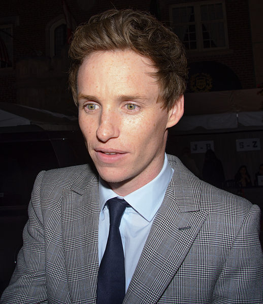

La teoría del todo
(The Theory of Everything
, originalmente en
inglés
)
es una
película biográfica
de
drama
y
romance
británica
-
estadounidense
de
2014
, dirigida por
James Marsh
y producida por Anthony McCarten. La película está
basada en las memorias de
Jane Hawking
, Travelling to Infinity: My life with Stephen
, en la cual da a conocer a relación con su exesposo,
el físico teórico
Stephen Hawking
, su diagnóstico y la evolución de su enfermedad. Esta
es la sexta película dirigida por James Marsh.
Eddie Redmayne
y
Felicity Jones
son los protagonistas, junto con
Charlie Cox
,
Emily Watson
,
Simon McBurney
y
David Thewlis
en los personajes secundarios.
La teoría del todo tuvo su première
mundial en el
Festival de Cine de Toronto
de 2014, y se estrenó en noviembre de 2014.
Focus Features
distribuyó la película en los
Estados Unidos
, Entertainment One Films distribuyó la película en
Canadá
y
Universal Pictures
en los demás países.
La cinta fue candidata a cinco 5
premios Óscar
, ganando en la categoría de
mejor actor
(
Eddie Redmayne
como
Stephen Hawking
)
La historia empieza en una fiesta a la que Stephen Hawking, estudiante británico de cosmología, asiste junto a su amigo Brian. Allí conoce a Jane Wilde, una estudiante de Poesía Medieval Española, donde comienzan a hablar y donde se enamoran. Tiempo después, Stephen cruza los pies cayendo a suelo, dándose un grave golpe en la cabeza. Cuando le hacen un análisis, le detectan que tiene esclerosis lateral amiotrófica (ELA), una enfermedad cerebral y muscular que le impide controlar el movimiento de sus músculos, y le comunican que su esperanza de vida es de 2 años. Jace le dice que le ama y que quiere pasar todo el tiempo que le queda de vida juntos. Tiempo después se casan y tienen dos hijos: Lucy y Robert. Por petición de su madre, Jane decide contratar a un pianista para que le dé clases de piano una vez a la semana a su hijo Robert, conociendo así a Jonathan, el director del coro de la iglesia local. La felicidad y los estudios de la familia Hawking sigue adelante, pero lla llegada de Jonathan pone a prueba al matrimonio, a sus familiares y la lealtad de Jane, ya que Jonathan y Jane parecen tener algo más que una amistad. Por último nace Timothy, lo que pone en desequilibrio a toda la familia, ya que se sospecha que el padre no es Stephen, sino Jonathan. Así que Jonathan admite que la ama y Jane le dice que ella también lo ama, pero finalmente él se va. Stephen consigue una fama mundial y es invitado a muchas presentaciones, actuaciones y espectáculos. Durante uno de esos viajes, mientras Jane está de campamento con los niños, Stephen sufre una neumonía y lo tienen que llevar urgentemente al hospital. Allí el doctor le comunica a Jane que la única forma de salvarlo es haciéndole una traqueotomía, o sea una incisión en el cuello , pero el inconveniente es que nunca volverá a hablar; dolida, ella accede a la operación de Stephen. Una vez realizada, ella quiere ver si de verdad no puede hablar y comprueba la triste verdad, por lo cual le intenta enseñar a hablar mediante una tabla que agrupa letras y colores, pero hay un corte de comunicación muy profundo. Preocupada, Jane decide contratar a Elaine Mason, una enfermera, para enseñarle lo que Jane intentaba que él aprendiese. Stephen aprende muy rápido y sus avances y teorías científicas también, pero su matrimonio se empieza a atrancar otra vez, ya que él parece estar empezando a enamorarse de Elaine y ella también de él. Tiempo más tarde, es instalada en la silla de Stephen una voz robótica para poder hablar con sus familiares y espectadores a la hora de sus conferencias. Finalmente, Stephen y Jane deciden divorciarse, ya que cada uno está enamorado de otra persona y su amor ya es muy pequeño con el nuevo fin.
El guionista Anthony McCarten había estado interesado en Hawking
desde que leyó su libro
Breve historia del tiempo
en 1988. En 2004, McCarten leyó las memorias de Jane Hawking
Travelling to Infinity: My Life with Stephen y
posteriormente comenzó a escribir una adaptación de guión del libro.
Se reunió varias veces con Jane en su casa para discutir el proyecto.
Después de múltiples borradores, conoció a la productora Lisa Bruce
mediante su mutuo agente de ICM, Craig Bernstein, en 2009.
Lisa Bruce pasó tres años con McCarten tratando de convencer a
Jane Hawking de permitirles realizar una adaptación cinematográfica
de su libro, sobre lo que Bruce dijo: "Era un montón de conversaciones,
muchos vasos de Jerez y muchas tazas de té". El 18 de abril de 2013,
James Marsh fue confirmado para dirigir la película, basandose en
Cambridge
y en otros lugares en el
Reino Unido
para la filmación, y con Eddie Redmayne en conversaciones para
el rol protagonista. El 23 de junio de 2013, se reveló que Felicity Jones había sido elegida para interpretar el
papel de protagonista de la película junto a Redmayne. El 8 de octubre de 2013, se confirmó que Emily
Watson y David Thewlis también formarían parte del elenco. El 8 de octubre de 2013, se confirmó que Tim Bevan,
Eric Fellner, Lisa Bruce y Anthony McCarten, de la productora Working Title, producirían la película.
El cineasta James Marsh había estudiado imágenes de archivo para dar a la película autenticidad, declarando:
"Cuando tuvimos fotografías y secuencias del documental de Stephen relacionadas con nuestra historia, intentamos
reproducirlas lo mejor que pudimos". Redymane se reunió con Hawking, comentando: "Incluso ahora, cuando es
incapaz de moverse, todavía vemos tal efervescencia en sus ojos". Y describió retratar a Hawking en pantalla
como un reto "considerable", agregando que "el verdadero problema de hacer una película es por supuesto que no
quites la esencia, cronológicamente. Así que tienes que mostrar su deterioro físico cotidiano, mientras que al
mismo tiempo mantener esta chispa y el ingenio y el humor que tiene".
Redymane pasó seis meses investigando la vida de Hawking, mirando cada video de cada entrevista que pudo
encontrar sobre él. Marsh dijo que lo que tenía que hacer Redmayne no fue fácil: "Tuvo que realizar una enorme
preparación física para el papel. No está haciendo de un discapacitado. En realidad está trazando el camino de
una enfermedad que corroe el cuerpo y la mente, y tiene que proyectar fuera esa erosión". Añadió que Hawking le
dio su bendición y también reveló que "la respuesta [de Hawking] fue muy positiva, tanto que se ofreció a
prestar su voz, la voz real que utiliza. La voz que se escucha en la última parte de la historia es en realidad
la verdadera voz electrónica de Stephen como la usa [...]", aseguró. Fue revelado al público del
Festival Internacional de Cine de Toronto
que una enfermera limpió una lágrima de la mejilla de Hawking, luego de una proyección de la película.
El 8 de octubre de 2013, el director de fotografía confirmó haber comenzado con el programa de posproducción, con la filmación tomando lugar en Cambridge y en otros lugares del Reino Unido. Antes del comienzo de la filmación, Working Title había comenzado a filmar en Saint John's College de la Universidad de Cambridge desde el 23 de septiembre de 2013 al 27 de septiembre de 2013; la noche que comenzaron estaban filmando la escena del baile de Cambridge, en 1963.El 24 de septiembre de 2013, la producción y reparto fueron vistos filmando escenas en el St John's College, The Backs en Queen's Road y en Queen's Green. El New Court Lawn y la cocina de Cambridge fueron lugares incluidos en el rodaje de la película. Se confirmó que la escena de baile, que fue la última rodada en exteriores, se filmó en un teatro de conferencias, mientras que las filmaciones restantes se completaron en un estudio durante las cinco semanas siguientes.La empresa de fuegos artificiales Titanium, que participó en los Juegos Olímpicos de Londres 2012 , proporcionó tres idénticos fuegos artificiales para la escena del baile.
Los efectos visuales estuvieron a cargo de la compañia Union Visual Effects.
Felicity Jones en el Festival Internacional de Cine de Toronto de 2014.
 Eddie Redmayne en el Festival Internacional de Cine de Toronto de 2014.